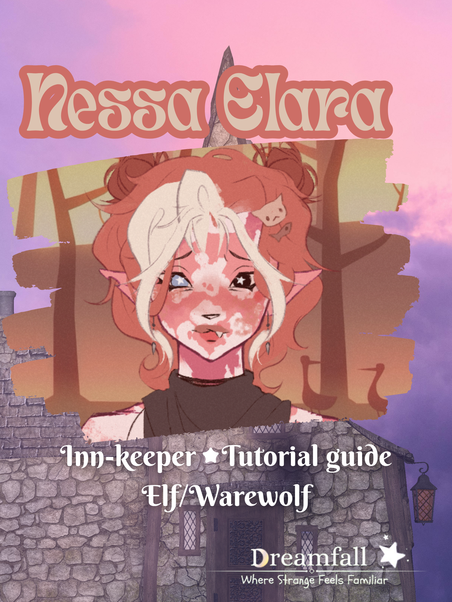

★ Meet the creatures of Dreamfall ★
These are the characters who will bring dreamfall to life and help you start your journey!

Nessa - Keeper of the Star Inn- Tutorial Guide
Nessa backstory
Like many of the dwellers of Dreamfall, Nessa was in the war of fallen dreams...
Unlike some of the others, Nessa has no memory of a world before the war.She was born after it had already begun.For as long as she can remember, the world beyond her doorstep has been one of violence, fear, and uncertainty. Stories of the time before the war were told to her by older travelers, passed down like half-forgotten fairy tales. A world where people could travel without fear. Where kingdoms weren't divided by bloodshed. Where magic was something beautiful rather than something to be feared.Nessa never knew that world.But she wanted to believe it existed.Growing up, she became fascinated by the rare moments of peace she encountered. A stranger sharing food with someone they had never met. Travelers laughing together around a fire. Someone offering shelter to a person who had nowhere else to go. Those moments stayed with her.As she grew older, Nessa began to realize that she couldn't stop the war. She couldn't repair the kingdoms, end the fighting, or undo everything that had already been lost. But perhaps she could create one small place where the war couldn't reach. That idea became the Star Inn. With the help of her closest companion, Mylo, Nessa built the inn from the ground up. What began as a simple place for weary travelers to sleep slowly became something much more. The two of them poured their magic into the walls, the doors, and the land surrounding the inn. Together, they created an enchantment unlike anything Nessa had ever seen. The moment someone enters the Star Inn, violence becomes impossible. Weapons cannot be drawn. Spells meant to harm another cannot be cast. Magic designed to injure, manipulate, or destroy simply refuses to work. Even objects created solely for violence lose their purpose within its boundaries. It doesn't matter who someone is when they walk through the door. Soldier. Mage. Bandit. King. Monster. Enemy. Everyone is given the same rule: Inside the Star Inn, you are safe. Nessa doesn't ask people what side of the war they belong to. She doesn't care who they fought before arriving at her door. If someone needs a bed, a meal, or simply somewhere to breathe without looking over their shoulder, she gives them a place. The Star Inn quickly became known among travelers as neutral ground. Some came because they were exhausted. Some came because they were running. And some came because, for the first time in years, they wanted to remember what it felt like to be around other people without wondering whether those people would kill them. Nessa became the heart of the inn. She listened to stories she probably wasn't supposed to hear. She watched enemies sit across the same table from one another. She witnessed friendships form between people who would have been sworn enemies outside her walls. Slowly, she began to wonder if perhaps she had created something more important than she originally intended. Maybe peace didn't have to begin with battles won. Maybe it could begin with one little inn. The Portal Then, one day, something appeared outside the Star Inn. A portal. Nessa had no idea where it came from. There had been no warning. No spell she recognized. No ritual. No ancient artifact. One day, there was simply a strange tear in the air just beyond her doorstep. Unlike the magic surrounding the inn, the portal didn't feel familiar. It felt old. And strangely... purposeful. The portal is a one-way gate. People can enter the world through it, but they cannot return through the same passage. Nessa has tried to understand it ever since it appeared, but every attempt to study its magic has raised more questions than answers. She doesn't know who created it. She doesn't know where it leads. She doesn't know why it opened. And most importantly, she doesn't know why it opened here. Right outside her door. At first, Nessa was afraid of it. The last thing she wanted was to invite another unknown danger into the sanctuary she had spent years building. But people began coming through. Strangers from places she had never heard of. People carrying stories of worlds beyond anything Nessa could have imagined. Some arrived frightened. Some arrived confused. Some arrived with nothing but the clothes on their backs. And because they had nowhere else to go... Nessa opened the door.She couldn't bring herself to turn them away. The portal eventually became part of the Star Inn's strange reputation. Travelers began referring to it as a doorway between worlds, though Nessa herself refuses to give it a grand name. To her, it is simply the portal. A mystery sitting in her backyard. A mystery she has reluctantly accepted.
- Charisma
- Inteligence
- Tutorial-Guide
- Battle Scarred
Nessa's Skills

Mylo The Cat - Tutorial Guide
Mylo's Backstory
Mylo — The Cat Who Remembers
Mylo remembers a world that Nessa never knew. Before the war, before the kingdoms fractured and the skies were filled with smoke, the world was different. It wasn't perfect. There was still greed, cruelty, and conflict. But there was something that became increasingly rare as the years passed. Hope. Mylo was already alive when the first battles began. At first, the war seemed distant. Rumors traveled faster than soldiers. Villages whispered about armies gathering beyond the mountains. Travelers spoke of borders closing and kingdoms preparing for conflict. Then the rumors became reality. The battles came closer. And closer. Eventually, there was nowhere left that the war couldn't reach. Mylo saw things he wishes he could forget. He watched homes become ruins. He watched people who had once been friends turn against one another. He watched animals flee alongside humans, carrying whatever belongings they could manage. And because animals could speak in this world, Mylo wasn't simply a silent witness. He heard everything. The pleas. The promises. The last words. The arguments between soldiers who no longer remembered what they were fighting for. He learned very quickly that wars weren't made up of heroes and villains. They were made up of frightened people. Some fought because they believed they were protecting their homes. Some fought because they were ordered to. Some fought because they had lost someone. And some simply didn't know how to stop. Mylo survived. He isn't entirely sure how. Perhaps it was luck. Perhaps it was instinct. Perhaps cats simply have a talent for surviving things they shouldn't. But surviving came with a price. By the end of the war, Mylo had lost nearly everything he once considered home. And unlike Nessa, he remembers exactly what the world had been like before it was destroyed. That became both a blessing and a curse. He remembers music that hasn't been played in years. He remembers markets that no longer exist. He remembers old roads that have disappeared beneath battlefields. He remembers people whose names have been forgotten by everyone except him. Sometimes, when Nessa asks him what the world used to be like, Mylo struggles to answer. Not because he doesn't remember. Because he remembers too much. Meeting Nessa Mylo met Nessa after the war had already begun. She was young. Too young, in his opinion, to carry the weight she had decided to take upon herself. Nessa didn't remember the world before the war. She had never seen the things Mylo had seen. Yet somehow, she still believed that people could be better. That fascinated him. At first, Mylo stayed around because he was curious. Then because he was protective. Eventually, he stopped pretending there was another reason. Nessa reminded him of something he thought the war had taken from him. Hope. There Mylo saw everything that had been lost, Nessa saw everything that could still be built. They became companions. Neither of them could quite explain when it happened.One day, Mylo was simply there.And he never left.
- Light Footed
- Sneak
- Tutorial-Guide
- Battle Scarred
Mylo's Skills